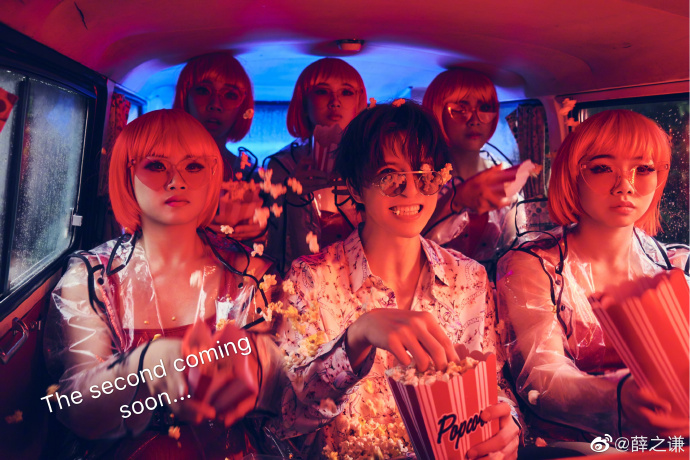

薛之谦
英语名：JokerXue；出生于1983年7月17日，华语创作歌手、词曲作家、唱片制作人。出生于上海，其母亲在其四岁时因心脏病去世。
早年曾学习美术绘画，后赴瑞士就读格里昂酒店管理学院酒店管理专业。至2018年底，已发布九张个人专辑，大部分歌曲由其本人作词作曲，
代表作品有《演员》、《丑八怪》等。
重要事件
- 2004年，参加我型我秀全国歌手大赛，后退赛。
- 2005年，再次参加该比赛，进入全国前四强，赛后签约上腾娱乐出道。
-
2006年，发行同名专辑《薛之谦》，一个半月内实体销量突破20万张，出道伊始便凭借此张专辑中自己作词作曲的《认真的雪》而成名，并在第六届全球华语歌曲排行榜中获得最受欢迎男新人奖。
- 2007年，发行专辑《你过得好吗》，一个月内实体销量突破15万张。
-
2008年，发行专辑《深深爱过你》。在听到此张专辑中薛之谦自己作词作曲的《传说》后，谷村新司表示“非常喜欢，是难得一闻的优秀创作”，并邀请薛之谦参加当年由谷村新司本人全权策划的日本大阪亚洲音乐节。12月20日在上海举行“谦年传说”个人首场演唱会。
-
2012年，与上腾娱乐的七年合约结束，薛之谦成为公司唯一一个完成整个合约的艺人。同年9月，签约坤宏传媒。
-
2013年，薛之谦发布了其音乐自由后的第六张专辑《意外》，并凭借该专辑获得第21届东方风云榜最佳唱作人和十大金曲两座大奖。
- 2015年，签约海蝶音乐，《绅士》EP发布。
-
2017年4月至7月，举办“我好像在哪见过你”个人巡回演唱会，取得2017年度华语乐坛演唱会票房第九名的成绩。
-
2017年6月20日，入驻上海杜莎夫人蜡像馆，成为首位入驻上海杜莎音乐梦工厂的明星。
-
2017年发布的专辑《渡》进一步写实，对现实生活的理解让他的歌词日益深刻。
-
2018年7月至2019年5月，举办“摩天大楼”世界巡回演唱会，成为第一位在台北小巨蛋连开两场的大陆歌手。
- 2018年，薛之谦的第九张专辑《怪咖》诞生。
-
2019年初，薛之谦入驻抖音。他为所代言品牌导演并主演数个广告微电影，展现了独特的无厘头搞笑风格。同年，薛之谦于6月26日陆续发布其第十张个人专辑《尘》中的歌曲。
主要作品
| 尘 |
怪咖 |
渡 |
| 木偶人 |
摩天大楼 |
动物世界 |
| 病态 |
怪咖 |
背过手 |
| 尘 |
违背的青春 |
高尚 |
| 笑场 |
最好 |
骆驼 |
生活照

生平
在2019年第三届中国唱片工业的行业协会奖唱工委音乐奖上，薛之谦获得“年度男歌手”，颁奖词评价薛之谦“拥有不可复制的声音魅力，卓越的演唱水准及现场表现力，将技巧巧妙地转化成在歌声中的情感。风格鲜明、真挚动人，令听众产生强烈共鸣和代入感，作品具有巨大市场影响力，并以自身的特色对审美风潮有所带动。”
薛之谦的影响力在各音乐播放平台亦得以体现。他是酷狗音乐2017年华语音乐年度最具影响力男歌手与年度最受欢迎男歌手，并且总播放量、下载量、热搜量、热度均第一，2018年华语男歌手歌曲收听人数冠军。QQ音乐2017年年度华语歌曲累计播放量第一，2018年年度华语歌曲累计播放量第一。网易云音乐2018年华语最高人气。至2018年底，YouTube上歌曲官方MV累计播放量为内地歌手第一，其中《演员》官方MV的播放量超过1.5亿。Spotify上歌曲播放量为内地歌手第一。